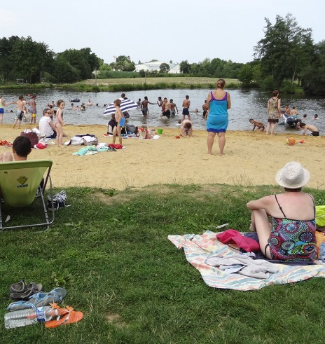
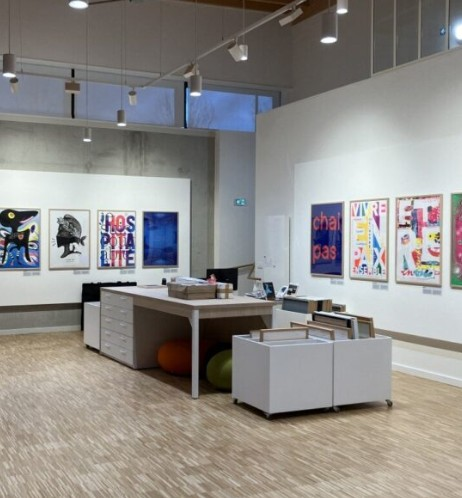

🚧 Projekt im Aufbau: Das Gîte befindet sich derzeit im Bau 🚧
📸 Verfolgen Sie den Baufortschritt auf unserem Blog (auf Französisch)!
📅 Eröffnung 2027: Ab Anfang 2027 mietbar als flexible möblierte Unterkunft, bis zum Sommer dann auch für Urlaubsaufenthalte.
🏕️ Unser Campingplatz im Garten (auf Englisch) ist ab sofort verfügbar.
🗺️ Entdecken Sie schon jetzt unsere lokalen Reiseführer und Aktivitäten.
Die Region von Ihrem Studio in Chaumeré (Domagné) aus entdecken
Ideal gelegen in der Ruhe des Landlebens, erlaubt Ihnen unsere Unterkunft, mühelos zwischen Geschichte, zeitgenössischer Kunst und Ausflügen ans Meer zu pendeln. Hinweis: Die unten verlinkten ausführlichen Reiseführer sind derzeit auf Französisch.
Wird geladen…--:--
Luftqualität: wird geladen…
Wetter in Chaumeré
Wird geladen…
Spritpreise in der Nähe
Wird geladen…
Ausflüge in der Nähe
Märkte, Foodtrucks, Veranstaltungen des Tages, Flohmärkte…
Eine strahlende Wächterin der bretonischen Marken: Die ehemalige Antiquitätenstadt zeigt eine eindrucksvolle mittelalterliche Burg. Ihr majestätischer Bergfried und die Wehrtürme erzählen von Jahrhunderten Geschichte, im Herzen einer reizvollen „Petite Cité de Caractère“.
Rund um eine authentische Mühle aus dem 17. Jahrhundert verbindet dieser historische Park Kulturerbe und monumentale Skulpturen. In dieser Kulisse finden Sie ein Drei-Sterne-Hotel, ein Gourmetrestaurant und ein angesagtes Bistro. Die perfekte Kombination zum Flanieren und Schlemmen!
Besuchen Sie die größte mittelalterliche Festung Europas! Stolz überragt dieser Granitriese mit seinen elf Türmen eine Stadt voller Charakter mit Kopfsteinpflastergassen und Fachwerkhäusern und bietet einen grandiosen Einblick in die Geschichte der bretonischen Marken.
Wandeln Sie auf den Spuren der berühmten Briefschreiberin! Flankiert von einem prächtigen französischen Garten nach Plänen von Le Nôtre war dieses gotische Herrenhaus aus dem 15. Jahrhundert der liebste Schreibort von Madame de Sévigné.
💡 Wenn Sie mehr über die Geschichte und das Kulturerbe der Umgebung und alle Einzelheiten dieses Abschnitts erfahren möchten, lesen Sie unseren Führer zu historischen Orten im Umkreis von 15 km (auf Französisch)!
Dieses charmante Dorfbistro pflegt Geselligkeit und die Freude am Teilen. Die Küchenchefin, ausgezeichnet unter den Siegern des französischen Burger-Pokals, verwöhnt mit hausgemachter, saisonaler und absolut köstlicher Küche.
Seit 1121 ist der Dienstagsmarkt in La Guerche-de-Bretagne eine unverzichtbare Institution. Er zählt zu den größten in Ille-et-Vilaine und versammelt Einwohner aus mehr als 40 Gemeinden. Mit Schwerpunkt auf kurzen Lieferketten stellt dieses gesellige Ereignis die lokalen Erzeuger in den Mittelpunkt und belebt den Einzelhandel der ganzen Region. Samstagvormittags gibt es eine „leichte“ Version.
Diese gesellige Brasserie in Châteaugiron gibt es seit 2015. Sie serviert reichhaltige Burger und kühles Bier in originellem Ambiente. Der perfekte Ort für eine genussvolle Pause.
Auf nach Europa! Von London bis Marseille verbindet Sie dieser überschaubare Flughafen schnell und ohne den Stress großer Terminals mit zahlreichen Zielen – mit Air France, KLM, Lufthansa, easyJet, Volotea, Transavia, Air Corsica und Aer Lingus.
Ein Land voller Magie und Geheimnisse: Dieser sagenhafte Wald beherbergt Merlin und Viviane. Eine ideale Naturkulisse für einen erholsamen Spaziergang voller Geschichten.
Perfekt für einen Tagesausflug: ein Spaziergang auf den Wehrmauern der Korsarenstadt, frische Luft am Strand von Le Sillon und Austernverkostung im Hafen.
Ein Wunder des Abendlandes mitten in der Bucht: eine majestätische Abtei auf ihrem Felsen, ein zeitloses mittelalterliches Dorf und das einzigartige Schauspiel der größten Gezeiten Europas. Nach dem Eiffelturm ist es das am zweithäufigsten besuchte Monument Frankreichs.
Ein wahres Binnenmeer, übersät mit paradiesischen Inseln. Mit seinem Mikroklima, Bootsfahrten und Austernverkostungen ist der Golf ein Konzentrat bretonischer Lebensart.
Nicht weit von Chaumeré entfernt wird dieses grüne Freizeitgelände bei schönem Wetter lebendig. Mit Kanu- und Kajakfahren, beaufsichtigtem Baden und Grillplätzen ist es der unverzichtbare Sommertreffpunkt für Familien.

Der Strand an der Seiche
💅 Lust abzuschalten? Von versteckten Sandstränden über außergewöhnliche Spas bis zu Schönheitsbehandlungen vor Ort: Entdecken Sie unseren Führer Entspannung & Wellness rund um das Gîte (auf Französisch)!
Mitten in Rennes ist Le Bacchus ein einzigartiges, geselliges Café-Theater. Es verbindet Komödien, Comedy-Shows und leckeres Essen zu einem gelungenen Kulturabend.
Der Saal Le Zéphyr in Châteaugiron ist ein lebendiger Kulturort. Er bietet ein abwechslungsreiches Programm mit Konzerten, Theaterstücken und fesselnden Shows.
Nur einen Katzensprung von Chaumeré entfernt bietet das Cabaret Moustache eine einzigartige Music-Hall-Welt mit Federn, Akrobatik, Gesang und Gourmet-Menüs für einen unvergesslich glitzernden Abend ... mitten auf dem Land!
In der Kapelle der Burg gelegen, zeigt dieses einzigartige Kunstzentrum monumentale zeitgenössische Ausstellungen. Ein magischer Dialog zwischen mittelalterlichem Erbe und moderner Kunst.
Ein lebendiger Kulturort, der den visuellen Künsten gewidmet ist. Entdecken Sie vielfältige Ausstellungen mit Drucken und zeitgenössischer Fotografie im Kulturzentrum von Vitré.

Die Artothek des Quai des arts in Vitré
🎭 Lust auf einen Ausflug? Kleine Kinos, Kulturzentren und Kunstausstellungen: Entdecken Sie unseren Führer Kultur & Unterhaltung rund um Domagné (auf Französisch)!
In Domagné wartet eine Welt der Miniaturen. Dieser einzigartige und originelle Park zeigt eine faszinierende Miniaturwelt. Ein ungewöhnlicher Besuch, ideal für Familien, um bemerkenswert präzise Nachbildungen zu bewundern, die im Ruhestand eines Landwirts aus dem Ort entstanden sind.
Dieser sagenumwobene Dolmen in Essé, der größte Frankreichs, ist ein magischer und geheimnisvoller Ort – perfekt für einen Spaziergang durch Märchen, Legenden und keltische Geschichte.
Lassen Sie sich Brocéliande in einem einzigartigen Sinneserlebnis erzählen. Dieses immersive szenografische Kino beflügelt Ihre Sinne und weckt die Geister des magischen Waldes.
Eine Hauptstation der Route durch das Land der Madame de Sévigné: Dieser Garten in Val-d'Izé lässt Sie das reiche historische Erbe der Heckenlandschaft um Vitré entdecken. Der wahre Wohnsitz der Marquise, das Schloss Les Rochers-Sévigné, liegt etwa 15 km entfernt, direkt bei Vitré (siehe oben).
Verloren am Waldrand verbirgt diese geheimnisvolle mittelalterliche Kirche auf wundersame Weise erhaltene Fresken aus dem 15. Jahrhundert. Eine geheime Zeitkapsel, zu besichtigen nach Voranmeldung oder bei außergewöhnlichen Öffnungen.